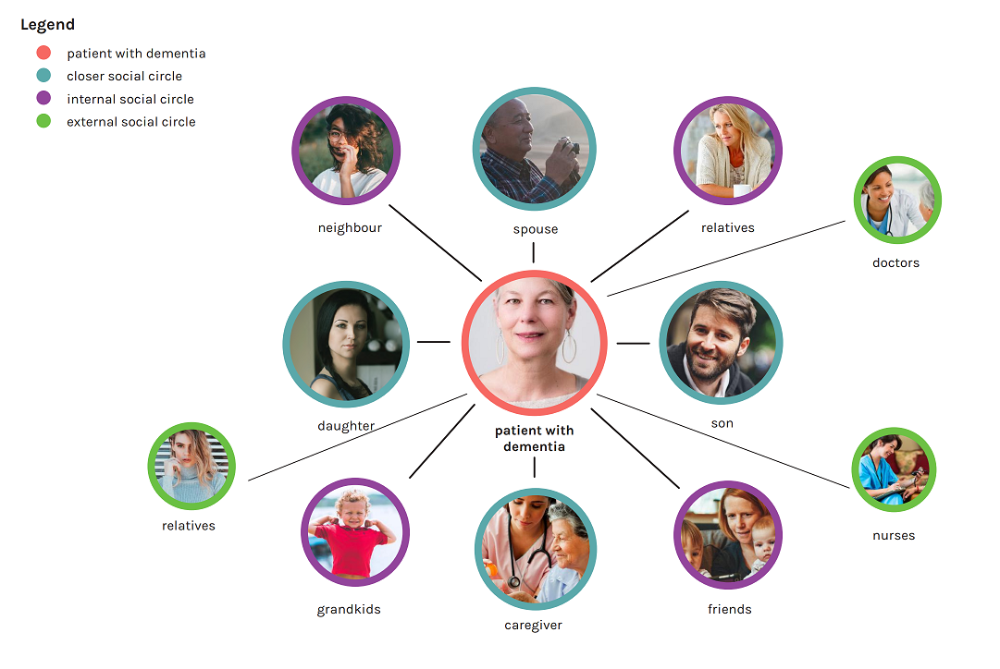
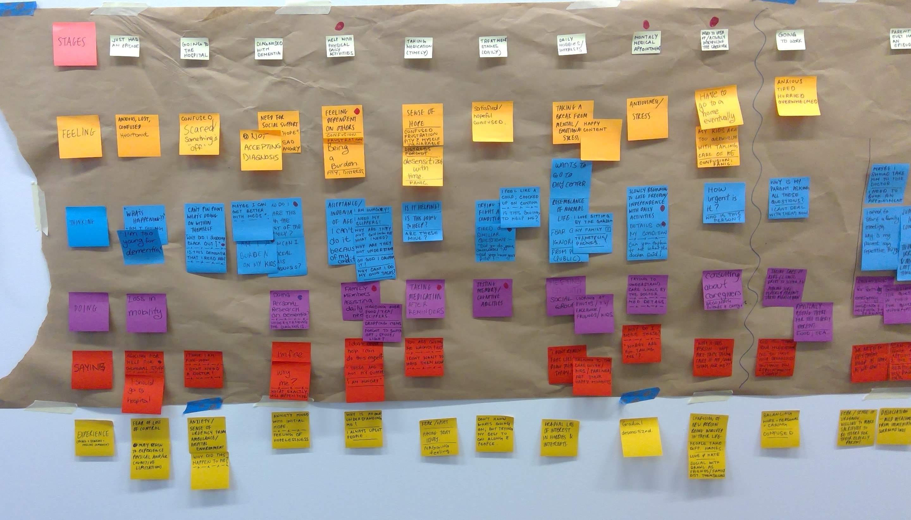

Stakeholder Map
We looked at who are the stakeholders involved with taking care of their elderly parent.
Journey Map
We looked at:
1. The elderly parent would do upon first discovering dementia and how they would cope with such discovery
2. What the family members would do and what they should do at each stage. (Early, Mid, Late stage of Dementia)
Information Architecture

I started the project by interviewing several artists and organizers. I created an affinity map with the information that I obtained from them
Storyboard

I drew out the scenerio storyboard of what I want the user to go through as an end result of this platform.
wireframes
I started the project by interviewing several artists and organizers. I created an affinity map with the information that I obtained from them
Accessibility
I started the project by interviewing several artists and organizers. I created an affinity map with the information that I obtained from them